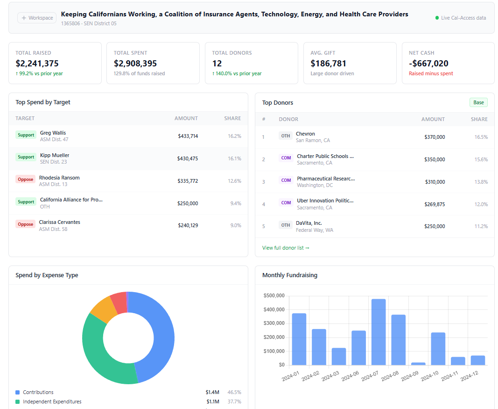

California campaign finance data is notoriously difficult to work with. BallotBase fixes that — clean dashboards for Assembly races, Senate campaigns, IE committees, and local elections.

From statewide races to local city council contests — if it's in Cal-Access, BallotBase can analyze it.
BallotBase automatically identifies the race type and applies the right analytics.
Join the beta. Enter any Cal-Access filer ID and get a full analytics dashboard — no Cal-Access account needed.
No credit card required. We'll reach out personally within 24 hours.